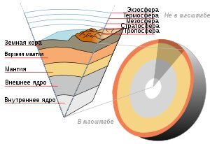

Земля́ — третья по удалённости от Солнца планета Солнечной системы. Самая плотная, пятая по диаметру и массе среди всех планет и крупнейшая среди планет земной группы, в которую входят также Меркурий, Венера и Марс. Единственное известное человеку в настоящее время тело Солнечной системы в частности и Вселенной вообще, населённое живыми организмами.
Земля относится к планетам земной группы, и в отличие от газовых гигантов, таких как Юпитер, имеет твёрдую поверхность. Это крупнейшая из четырёх планет земной группы в Солнечной системе, как по размеру, так и по массе. Кроме того, Земля среди этих четырёх планет имеет наибольшие плотность, поверхностную гравитацию и магнитное поле. Это единственная известная планета с активной тектоникой плит.
Земля, как и другие планеты земной группы, имеет слоистое внутреннее строение. Она состоит из твёрдых силикатных оболочек (коры, крайне вязкой мантии), и металлического ядра. Внешняя часть ядра жидкая (значительно менее вязкая, чем мантия), а внутренняя — твёрдая.
Литосфера — твёрдая оболочка Земли. Состоит из земной коры и верхней части мантии. В строении литосферы выделяют подвижные области (складчатые пояса) и относительно стабильные платформы. Блоки литосферы — литосферные плиты — двигаются по относительно пластичной астеносфере. Изучению и описанию этих движений посвящён раздел геологии о тектонике плит.
Земная кора — это верхняя часть твёрдой Земли. От мантии отделена границей с резким повышением скоростей сейсмических волн — границей Мохоровичича. Есть два типа коры — континентальная и океаническая. В континентальной коре выделяют три слоя: осадочный чехол, гранитный и базальтовый. Океаническая кора сложена преимущественно породами основного состава, плюс осадочный чехол. Земная кора разделена на различные по величине литосферные плиты, двигающиеся относительно друг друга.
Земная кора под океанами и континентами существенно различается. Земная кора под континентами обычно имеет толщину 35—45 км, в гористых местностях мощность коры может доходить до 70 км.Верхняя часть континентальной земной коры представляет собой прерывистый слой, состоящий из осадочных и вулканических горных пород. Слои могут быть смяты в складки, смещены по разрыву. На щитах осадочная оболочка отсутствует. Ниже расположен гранитный слой, состоящий из гнейсов и гранитов. Ещё ниже находится базальтовый слой, сложенный метаморфическими горными породами, базальтами и габбро. Между этими двумя слоями проходит условная граница, называемая поверхностью Конрада.
Кора под океанами имеет толщину 5—10 км. Она подразделяется на несколько слоёв. Сначала расположен верхний слой, состоящий из донных осадков, толщиной менее километра. Ниже лежит второй слой, сложенный главным образом из серпентинита, базальта и, вероятно, из прослоев осадков.
|  | |
|---|---|
| Глубина, км | Слой |
| 0—60 | Литосфера (местами варьируется от 5 до 200 км) |
| 0—35 | Кора (местами варьируется от 5 до 70 км) |
| 35-60 | Самая верхняя часть мантии |
| 35—2890 | Мантия |
| 100—700 | Астеносфера |
| 2890—5100 | Внешнее ядро |
| 5100—6378 | Внутреннее ядро |
Мантия — это силикатная оболочка Земли, расположенная между земной корой и ядром Земли.
Мантия составляет 67 % массы Земли и около 83 % её объёма (без учёта атмосферы). Она простирается от границы с земной корой (на глубине 5—70 километров) до границы с ядром на глубине около 2900 км. Мантия занимает огромный диапазон глубин, и с увеличением давления в веществе происходят фазовые переходы, при которых минералы приобретают всё более плотную структуру. Мантия Земли подразделяется на верхнюю мантию и нижнюю мантию.
Ядро — центральная, наиболее глубокая часть Земли, сфера, находящаяся под мантией и, предположительно, состоящая из железо-никелевого сплава с примесью других сидерофильных элементов. Глубина залегания — 2900 км. Средний радиус сферы — 3485 км. Разделяется на твёрдое внутреннее ядро радиусом около 1300 км и жидкое внешнее ядро толщиной около 2200 км, между которыми иногда выделяют переходную зону. Температура в центре ядра Земли достигает 6000 °С. Масса ядра — 1,9354⋅1024 кг.
Впервые Земля была сфотографирована из космоса в 1959 году аппаратом Эксплорер-6[179]. Первым человеком, увидевшим Землю из космоса, стал в 1961 году Юрий Гагарин. Экипаж Аполлона-8 в 1968 году первым наблюдал восход Земли с лунной орбиты. В 1972 году экипаж Аполлона-17 сделал знаменитый снимок Земли — «The Blue Marble».
Из открытого космоса и с «внешних» планет (расположенных за орбитой Земли) можно наблюдать прохождение Земли через фазы, подобные лунным, так же, как земной наблюдатель может видеть фазы Венеры (открытые Галилео Галилеем).